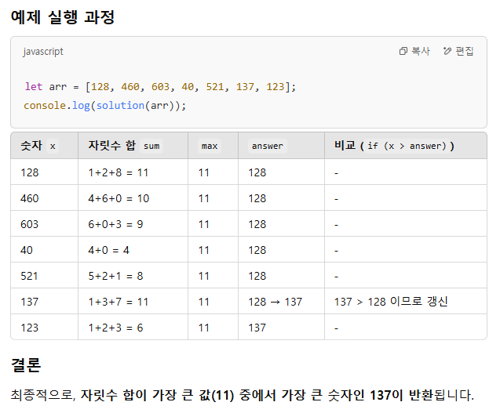

sum+=(tmp%10); 10으로 나눈 나머지가 더해진다.
tmp=Math.floor(tmp/10); 몫
128 % 10 = 나머지 8 -> 8을 sum에 누적
10으로 나눈 몫으로 바뀜 ->12
12 % 10 = 나머지 2 12으로 나눈 몫 ->1
1 % 10 = 나머지 1
1을 10으로 나눈 몫 ->0 break;
// 8,2,1 을 sum에다 누적한다.
------------------------------------------
tmp가 0이면 멈춤
